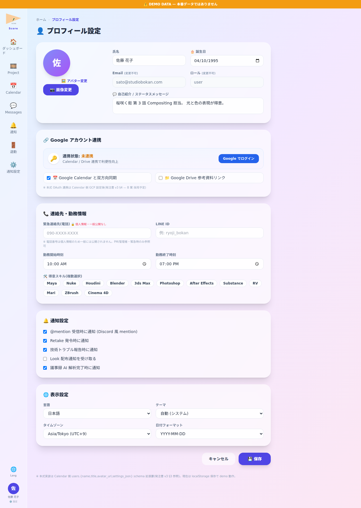

📘 この機能の目的
自分の avatar・name・連絡先・role 表示の管理 + Google アカウント連携 (Calendar / Drive)。他 user からの mention 表示名にも使用。
📸 画面

📍 画面例: 佐藤 User が Google ログイン → Score user (佐藤 花子) と紐付け → Google Calendar 同期 ON → 桜咲く街 第 4 話 試写日 (6/15) が Score Calendar と Google Calendar 両方に表示 → 出勤前にスマホ Google Calendar で確認可能。
✨ 主な機能
- avatar 画像 upload — 角丸表示 (Calendar 統合)
- name / nickname 設定 — mention 時の表示名
- 連絡先 (email / phone) — 緊急時連絡用
- role 表示 — admin が割当 (PM / Director / Lead / User / Admin)
- 誕生日 banner — Dashboard で誕生日 user に祝福表示
- 🔗 Google アカウント連携 — OAuth 経由で Google ログイン → Score user と紐付け (連携状態 ✅/未連携 表示)
- ・📅 Google Calendar 双方向同期 — Score Calendar イベントと Google Calendar イベントを 自動同期 (mtg・試写・納品日 等)
- ・📁 Google Drive 参考資料リンク — Retake 発令時の参考素材として Drive 共有 URL を直接添付可能
- ・解除 button — 連携解除 (Calendar 同期停止 + Drive リンク権限取消)
- ・本式 OAuth 連携: Calendar 側 GCP (Google Cloud Platform) 設定後に正式有効化 (発注書 v3 §4 — B 案 採用予定)
🌸 使用例 — 架空 project「桜咲く街」
佐藤 User が Google ログイン → Score user (佐藤 花子) と紐付け → Google Calendar 同期 ON → 桜咲く街 第 4 話 試写日 (6/15) が Score Calendar と Google Calendar 両方に表示 → 出勤前にスマホ Google Calendar で確認可能。
🛠 操作方法
- サイドメニュー👤 → Profile
- avatar click → 画像選択 → upload
- name / 連絡先 編集 → 保存
- role は admin のみ変更可
- 🔗 Google アカウント連携 section の「Google でログイン」 button click → OAuth popup → Google 認証 → 連携完了 (✅ 連携済 表示 + email 紐付け)
- 📅 Calendar 双方向同期 ON → Score Calendar 予定が Google Calendar (個人 / Studio Workspace) に自動反映 + Google 側予定変更も Score に反映
- 📁 Drive 参考資料リンク ON → Retake 発令時に Drive 共有 URL を直接 paste 可能 (Compositor は Drive 視聴で Retake 確認)
- 解除 button click → 連携取消 + 同期停止 (Google 側データ削除なし)